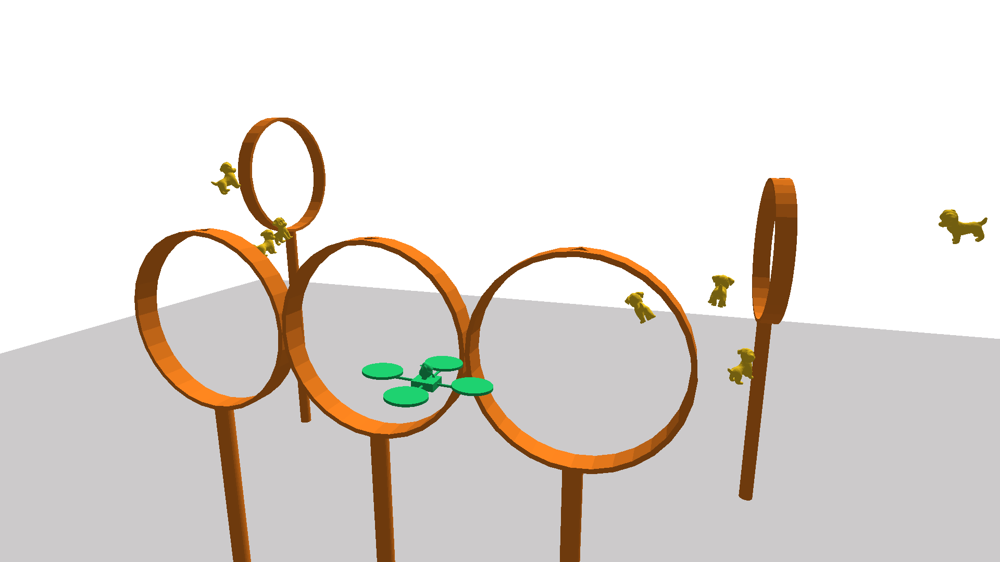

01 / Autonomous flight control / Evaluated in PyBullet simulation
AE353 DP4 · Maxwell Lutter & Landon Lopez
Navigating a drone obstacle course with an observer and collision-avoidance guidance
The challenge was to turn a hover controller into a drone that could navigate a three-dimensional course of rings and obstacles using noisy sensor measurements. With Landon Lopez, I combined state estimation, feedback, and course-level guidance, then automated repeated simulations to test completion and speed. I was the primary developer of the final drone code; the resulting design completed 95 of 100 trials and met both project requirements.
- My contribution
- Primary developer of the final drone code; collaborative modeling, gain selection, navigation strategy, trial automation, and report work
- Tools
- LQR · State estimation · Collision avoidance · PyBullet · Python
- Outcome
- 95/100 course completions; 73.35 s mean among successful runs

Start with a controller that can hold hover
The team linearized the quadrotor dynamics around stationary, level hover. The twelve-state model includes position, attitude, linear velocity, and angular rate, with three body-torque commands and total thrust as its four inputs.
The sensors report noisy positions at the front and back rotors. Linearizing this measurement model and checking full-rank controllability and observability supported an LQR controller and a dual-LQR observer. The observer reconstructs the state used by feedback, so the navigation logic can operate on estimated position rather than an unavailable exact state.
Turn ring locations into a flyable reference
Simply jumping the target from one ring center to the next would ask the local hover controller to make abrupt corrections. The design instead advances a moving reference toward the next checkpoint. The retained implementation uses near and far waypoints on opposite sides of a ring to guide a crossing, with a visit state that determines which waypoint is active.
Reference motion is capped, and local proximity checks reduce speed near obstacles. Distance-dependent repulsion steers the reference away from obstacles, other drones, and the nearest ring edge. Separate gains for ring geometry and other objects allow the approach behavior to be adjusted without changing the stabilizing feedback design.
The design philosophy favored consistent completion over the fastest possible run. This guidance layer was the key bridge between a linear model around hover and a nonlinear navigation task with collisions and checkpoint geometry.
Test the requirements across randomized courses
95 of 100 trials completed the course; successful runs averaged 73.35 s.
The trial workflow initialized the simulator repeatedly, logged states and estimates, and recorded the simulator’s completion flag and finish time. Randomized starting conditions and course geometry tested whether the design worked beyond one nominal demonstration.
The requirements were at least 80% course completion and a mean completion time below 80 seconds among successful runs. Both were met. The 95 successful times ranged from 68.36 to 79.12 seconds; the 73.35-second mean excludes the five failures.
Tracking-error and position-estimation-error distributions helped separate reference-following behavior from observer behavior. Most recorded estimation errors were near zero, while larger departures appeared around sharp maneuvers and failure cases.


Use the five failures to identify the next improvements
The report locates all five failed trajectories near the obstacle region. Sharp changes in direction and divergence between true and estimated position suggested collision-related disturbances and difficulty stabilizing during or after close approaches.
The team proposed greater ring-edge clearance, further tuning of controller and observer weights, and smoother transitions in the desired trajectory. Faster operation was also a possible follow-on because the design had prioritized consistency. These are proposed improvements; the documented result remains the 100-trial simulation study.

My contribution: integrate the design and produce evidence
The report credits my work on linearizing the dynamics and sensor model, selecting control and observer gains, making navigation decisions, automating repeated-trial data collection, generating figures, and revising the report. It identifies me as the primary developer of the final drone code. Landon contributed controller implementation, obstacle avoidance, methods writing, and analysis and conclusions.
The linked notebook exposes the path from symbolic modeling and Riccati-equation gains to the Controller class, ring-visit logic, state-estimate updates, bounded commands, trial automation, and failure plots. This shows experience integrating modeling, estimation, guidance, and evaluation into one working system, with measured acceptance criteria and remaining limitations. The testing was in PyBullet; it does not establish physical-flight performance.
Explore the evidence
- Controller, observer, trial code & contribution notesGitHub code ↗
- Archived design and evaluation notebookJupyter ↗
- Readable notebook codePython ↗
- Related standalone controller versionPython ↗
- Full project report · 7 pagesPDF ↗
- AE353 drone simulator and course assetsCourse source ↗
- Course scene and mesh creditsAttribution ↗